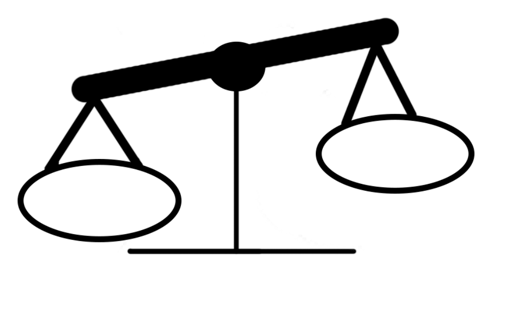

Her er en af måderne hvor du også kan spare penge mens du er på SU. Det er vigtigt at, spørge sig selv inden man køber noget, hvad der er nice to have og hvad der er need to have. Need to have er ting du ikke kommer uden om at skulle betale. Nice to have er ting der kunne være fedt at have, men som du egentlig ikke behøver.
